環境変数の値の参照と設定(SET)
環境変数に設定されている値を参照したり、新しい値を設定するために使用する SET コマンドの使い方について解説します。なおコマンドプロンプトから SET コマンドを使って環境変数に値を設定した場合、そのコマンドプロンプト内でのみ有効となる一時的な設定となります。永続的に環境変数の値を設定するには SETX コマンドを使うか、 Windows の環境変数の設定画面から行います。
目次
SETコマンドの使い方
SET コマンドは環境変数の値を参照したり、新しい値を設定したり、または削除するために使用します。書式は次の通りです。
SET [変数名=[文字列]]
いくつのかのオプションがありますが、それぞれ確認していきます。
なお環境変数とはOSが参照する設定を保存するためのものです。例えばコマンドを実行する時にどのディレクトリ探すのかを設定した PATH や、一時的な作業ファイルなどを保管するために使用するディレクトリを設定した TEMP などがあります。
環境変数と設定されている値の一覧を表示する
最初に現在作成されている環境変数と値の一覧を表示します。SET コマンドを引数無しで次のように実行してください。
set
コマンドを実行すると次のように表示されます。
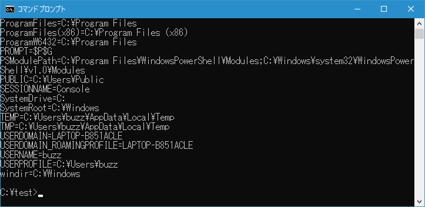
ご自身でインストールしたアプリケーションが設定した環境変数などもあるので表示される内容は利用者ごとに異なりますが、多くの環境変数が作成されていることが分かります。
環境変数と値の一覧を表示する時にフィルタをかけることができます。例えば P で始まる環境変数だけを表示したい場合には次のように実行してください。
set p
さらに絞って PA で始まる環境変数の値だけを表示したい場合には次のように実行してください。
set pa
ではあとの方で実際にコマンドを実行してみます。PA から始まる環境変数だけが表示されました。
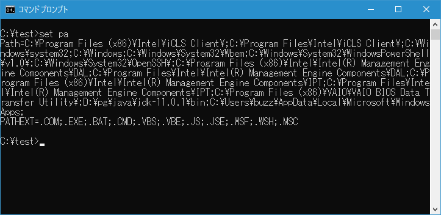
指定した環境変数の値を参照する
指定した環境変数の値を参照したい場合には次のように ％環境変数名% で参照することができます。
%環境変数名%
例えば環境変数 PATHEXT の値を参照して表示するには次のように実行します。
echo %pathext%
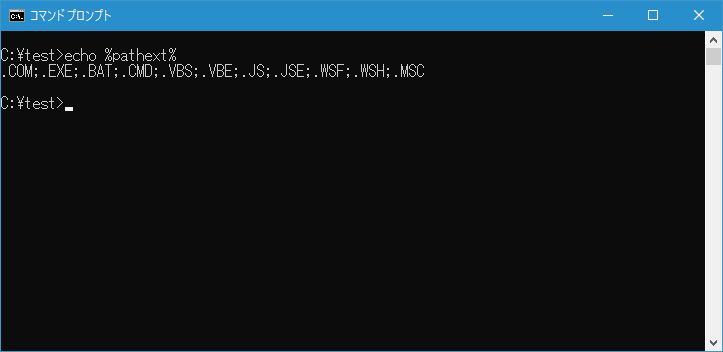
環境変数 PATHEXT に設定されている値が表示されました。
環境変数に値を設定する
環境変数に値を設定するには次の書式を使います。
set 環境変数名=値
存在する環境変数に新しい値を設定することもできますし、新しい環境変数に値を設定することもできます。なおコマンドプロンプトから SET コマンドを使って環境変数に値を設定しても、設定した値が有効なのは SET コマンドを実行したコマンドプロンプト内だけです。
例として環境変数 PATHEXT に新しい値を設定してみます。次のように実行してください。
echo %pathext%
set pathext=.ext;.bat
echo %pathext%
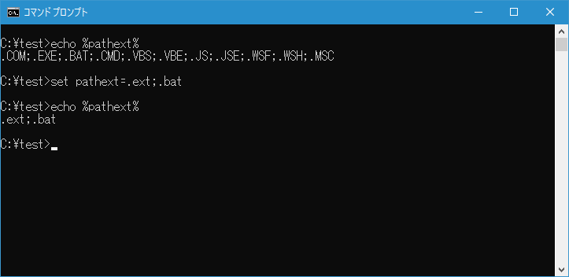
既存の環境変数に新しい値を設定することができました。
それではコマンドプロンプトを一度終了したあと、あらためてコマンドプロンプトを起動して環境変数 PATHTXT の値を参照してみてください。
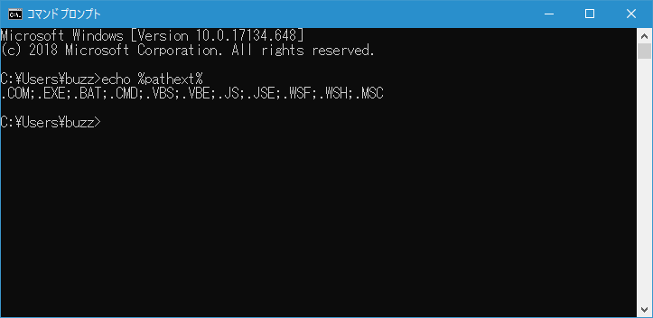
環境変数 PATHEXT の値が変更前に戻っていることが確認できます。このように SET コマンドを使って環境変数の値を変更しても、有効なのは SET コマンドを実行したコマンドプロンプト内だけです。
-- --
環境変数に値を設定する時に、既存の値に追加したい場合には次のように %環境変数名% に追加する値を続けて記述します。
set 環境変数名=%環境変数名%追加する値
%環境変数名% は現在設定されている値を参照しますので、新しい値として現在の値と追加する値を合わせたものを設定することになります。(区切り文字などが必要な場合は「追加する値」の前に区切り文字を記述することを忘れないでください)。
例として環境変数 PATHEXT に既存の値に加えて .JAVA を加えてみます。環境変数 PATHEXT の区切り文字はセミコロン(;)なので、次のように実行してください。
echo %pathext%
set pathext=%pathext$;.JAVA
echo %pathext%
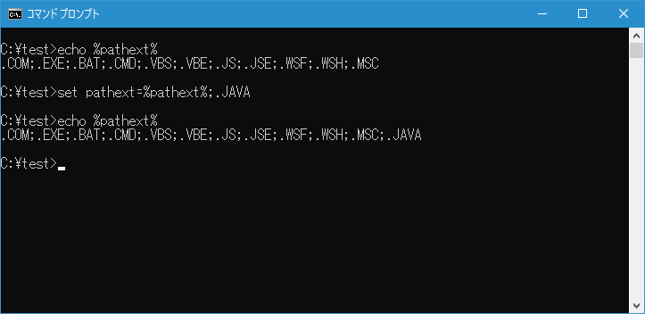
既存の値に新しい値を追加して環境変数に設定することができました。
-- --
次に新しい環境変数に値を設定してみます。次のように実行してください。
set myname=Yamada Tarou
echo %myname%
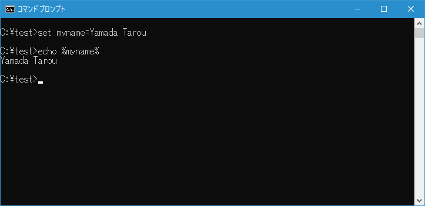
新しい環境変数が作成されて値を設定することができました。バッチファイル内などで変数を使用したい場合には、この新しい環境変数を作成して値を設定するという書式を利用し、環境変数をいわゆる変数のように利用します。
環境変数の値を削除する
環境変数の値を削除するには次のように値を記述しないで SET コマンドを実行してください。
SET 環境変数名=
例として環境変数 PATHEXT の値を削除してみます。次のように実行してください。
echo %pathext%
set pathext=
echo %pathext%
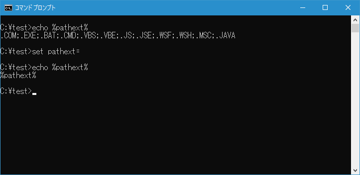
指定の環境変数の値を削除することができました。なお値が削除されると環境変数そのものが存在しなくなります。
|や<など特殊な文字を環境変数の値として設定する
パイプやリダイレクトで使用する一部の文字「|」「<」「>」「&」「^」を環境変数の値として設定する場合には、文字の前に「^」を付けて指定してください。
例として新しい環境変数に特殊な文字を値を設定してみます。次のように実行してください。
set unitname=^<Yamada^&Satou^>
set unitname
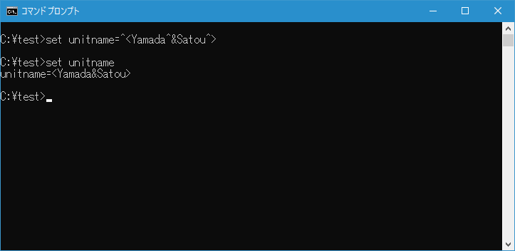
環境変数に一部の特殊な文字を設定することができました。
環境変数に式の結果を設定する
環境変数に値を設定するときに式の結果を設定するには次の書式を使用します。
SET /A 式
コマンドラインからでも利用できますが、バッチファイル内で利用されることが多いかと思います。バッチファイルの使い方については「バッチファイルの作成」を参照されてください。
計算式では一部の演算子を利用することができます。利用可能な演算子は次の通りです(上のものほど優先順位が高くなっています)。
| 記号 | 種類 |
|---|---|
| () | グループ化 |
| ! ~ - | 単項演算子 |
| * / % | 算術演算子 |
| + - | 算術演算子 |
| << >> | 論理シフト |
| & | ビット演算子 AND |
| ^ | ビット演算子排他的 OR |
| | | ビット演算子 OR |
| = *= /= %= += -= &= ^= |= <<= >>= | 代入 |
| , | 式の区切り記号 |
数値を環境変数に設定するには次のように記述します。数値は 10 進数ですが、0x を付けると 16 進数、0 を付けると 8 進数になります。簡単なテストを行うために calc.bat ファイルを作成して次のように記述しました。
@echo off
set /a num1=16
set /a num2=0x2b
echo num1 = %num1%
echo num2 = %num2%
実行すると次のように表示されます。結果は10進数で表示されるようです。
-- --
加算や減算などの計算結果を設定するには次のように記述します。簡単なテストを行うために calc.bat ファイルに次のように記述しました。
@echo off
set /a num1=4+2
set /a num2=5*8
echo num1 = %num1%
echo num2 = %num2%
実行すると次のように表示されます。
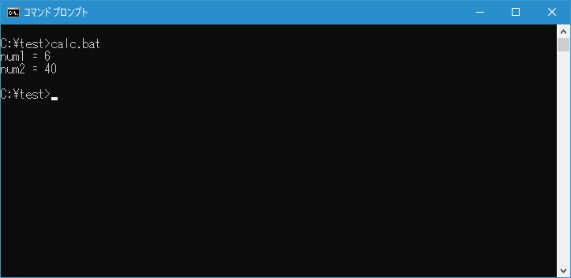
-- --
論理シフトやビット演算子を使う場合はダブルクォーテーションで囲って記述します。簡単なテストを行うために calc.bat ファイルに次のように記述しました。
@echo off
set /a num1="4<<2"
set /a num2="4^2"
echo num1 = %num1%
echo num2 = %num2%
実行すると次のように表示されます。
-- --
式の中で文字列を記述すると、文字列は環境変数として処理されます。存在しない環境変数だった場合は 0、そうでない場合は数値に変換されます。この記述方法を利用して、一般的な変数のような使い方をすることができます。簡単なテストを行うために calc.bat ファイルに次のように記述しました。
@echo off
set /a other=2
set /a sum=4+other
set /a sum+=5
echo sum = %sum%
SET コマンド内で別の環境変数の値を参照する場合は %環境変数名% のように記述する必要がなく、単に 環境変数名 と記述するだけでいい点に注意してください。
実行すると次のように表示されます。
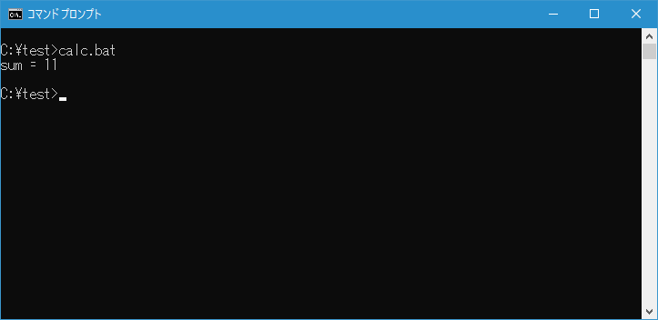
ユーザーからの入力を受け取り環境変数に設定する
指定したメッセージを画面に表示してユーザーからの入力を待ち、入力された値を環境変数に設定することができます。次の書式を使用します。
SET /P 変数=[プロンプト文字列]
コマンドラインからでも利用できますが、バッチファイル内で利用されることが多いかと思います。
簡単なテストを行うために calc.bat ファイルを作成して次のように記述しました。
@echo off
set /p num=数値を入力してください：
set /a mod=num%%2
if %mod% equ 0 (
echo 入力された値は偶数です
) else (
echo 入力された値は奇数です
)
ユーザーから入力された値を環境変数へ設定し、2の剰余を取って偶数か奇数かを判定して表示します。実行すると次のように表示されて入力待ちとなります。
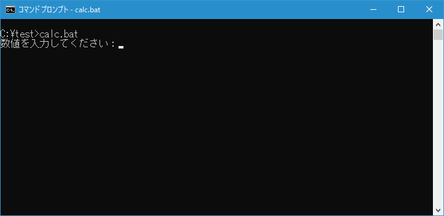
ユーザーが数値を入力すると偶数か奇数かの判定を行って表示します。
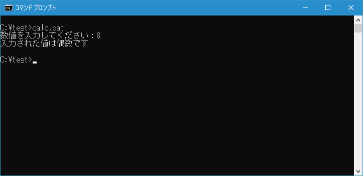
-- --
SET コマンドを使って環境変数の値を参照したり値を設定する方法について解説しました。
( Written by Tatsuo Ikura )

著者 / TATSUO IKURA
初心者～中級者の方を対象としたプログラミング方法や開発環境の構築の解説を行うサイトの運営を行っています。